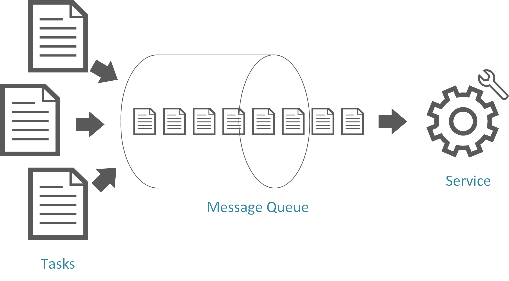

The Queue-Based Load Leveling Pattern is a design pattern used in software development to manage spikes in incoming requests or processing loads by employing a queue to buffer and distribute the work evenly over time. This pattern helps prevent resource overutilization, maintain system stability, and ensure responsive user experiences during peak loads. It is particularly useful for applications that experience variable traffic loads and need to ensure consistent performance during both normal and peak load scenarios.
Resource Stabilization:
By spreading out the processing of tasks over time, the pattern helps stabilize resource utilization and prevents sudden spikes in resource consumption.
Prevent Overloads:
During peak load periods, the pattern prevents the system from being overwhelmed by incoming requests, which could lead to slow response times or service outages.
Maintain Responsive User Experience:
Users experience consistent response times even during peak loads, as the system processes tasks in a controlled manner rather than becoming unresponsive due to overload.
Improved Scalability:
The pattern facilitates horizontal scalability by allowing you to add more workers to process tasks from the queue, helping the system handle larger loads.
Identify Peak Load Scenarios:
Identify the periods or scenarios during which your application experiences spikes in incoming requests or processing demands. These could be specific times of the day, events, promotions, or any situation where the load increases significantly.
Choose a Queue Technology:
Select a suitable queue technology or message broker that fits your application’s requirements. Popular choices include RabbitMQ, Apache Kafka, Amazon SQS, or native queuing mechanisms provided by programming languages or frameworks.
Implement Queue and Workers:
Set up the queue and implement worker processes that retrieve tasks from the queue and process them. Ensure that workers are designed to handle tasks at a controlled rate, preventing the system from becoming overloaded.